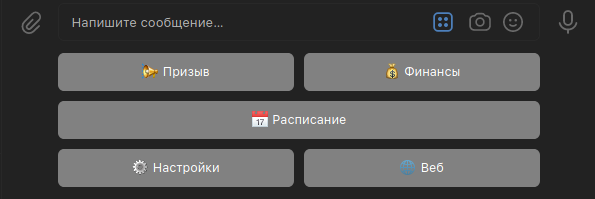
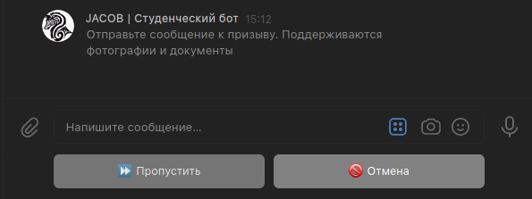
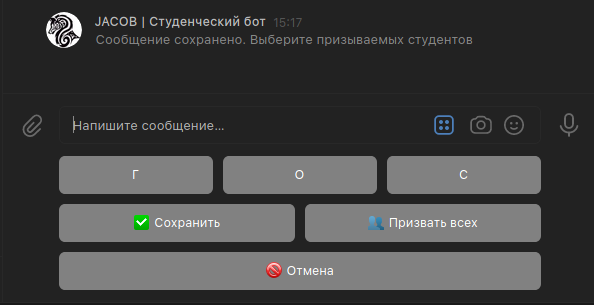
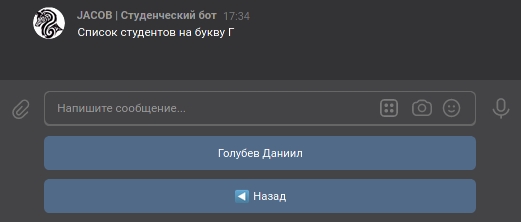
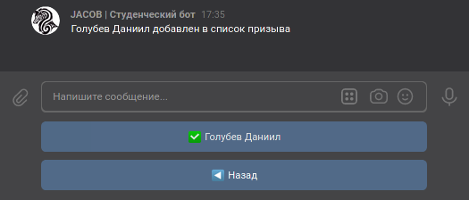
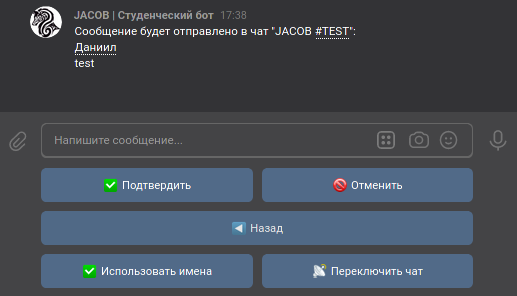
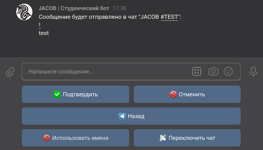

Призыв
Описание
Нужен доступ администратора
Призыв - это функция, которая позволяет отправить в подключенную беседу сообщение с упоминанием выбранных студентов
Интерфейс

В главном меню (вызывается по команде Начать) нажмите на кнопку { Призыв}, чтобы открыть меню Призыва.
Призыв}, чтобы открыть меню Призыва.

Вам предложать ввести текст, который должен сопровождать Призыв и прикрепить вложения (сейчас поддерживаются фотографии, документы, граффити и голосовые сообщения)
Вы можете также пропустить ввод сообщения и отправить только упоминания, нажав на кнопку { Пропустить}
Пропустить}

Далее откроется меню Призыва. Здесь можно выбрать студентов для призыва (все студенты находятся в подменю по первым буквам их фамилий), выбрать всех студентов для Призыва, сохранить или отменить Призыв
Выберите студентов для Призыва и нажмите кнопку { Сохранить}, чтобы настроить и подтвердить Призыв
Сохранить}, чтобы настроить и подтвердить Призыв

Когда количество уникальных первых букв фамилий превышает 15 вместо списка букв отображается список из двух диапазонов букв, при нажатии на который открывается список из букв в этом диапазоне. В остальном такой вариант раскладки ничем не отличается от стандартного.



Когда студент добавлен в список Призыва, возле его имени появляется галочка ()

В меню подтверждения призыва вы можете изменить настройки (чат для отправки, использование имен).
Параметр "Использование имен" влияет на способ генерации призыва. С именами из ВК в качестве подсказок или с восклицательными знаками (!)

После нажатия на кнопку { Подтвердить} в выбранный чат отправится указанное сообщение